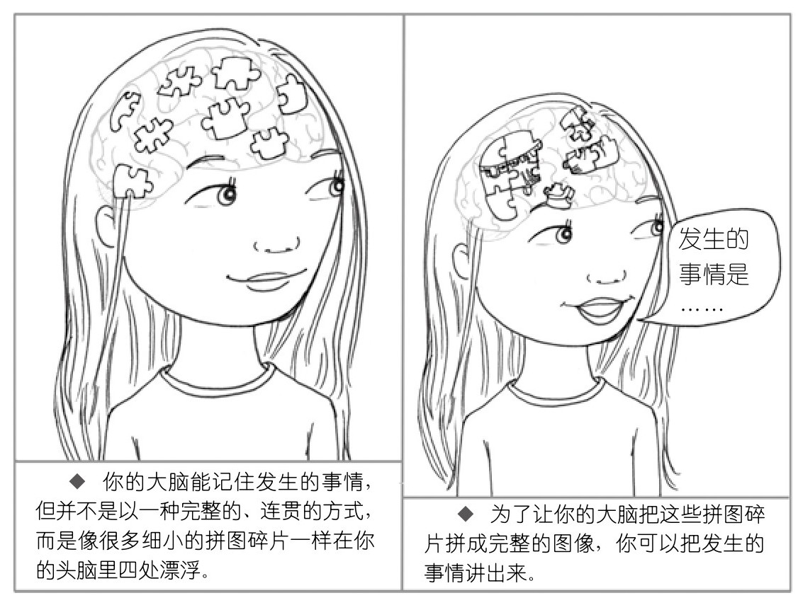

04a · 你脑子里有两套记忆，其中一套不觉得自己是记忆
上一篇我们收完了上下脑——平常锻炼二楼，着火时唤起上层，失控时从身体绕进去。这一章，西格尔打开了第三个维度。左右脑是横向，上下脑是纵向——记忆，是时间轴。
你在沙发上找到一个安抚奶嘴
想象一个场景。你把手伸进沙发坐垫的缝里，摸到一个东西。拿出来——是孩子三年前用的那个安抚奶嘴。
那一瞬间发生的事，你控制不了。你看见它被塞在那个小小嘴里显得特别大。你想起孩子拿它喂狗、你闪电般冲过去抢。你想起戒奶嘴那晚，一家人没一个睡好。这些画面涌进来的速度比你意识到自己在回忆之前还要快。
西格尔说，这就是记忆的真实面貌：它不是档案柜，是联想。
一个安抚奶嘴碰了你的手指 → 上千个神经元同时"开火" → 它们连上婴儿的嘴、狗、那个哭闹的夜晚。你脑子里没有"打开安抚奶嘴文件夹"这个动作。触觉直接点燃了一张网。
芭蕾舞课上完 → 拿到泡泡糖。两次之后，"下课"和"泡泡糖"在孩子的脑子里焊死了——不需要任何人提醒，每次下课他自动期待甜的东西。神经元"一齐开火，一齐串联"。这就是记忆的工作方式。
记忆也不是复印机
第二个更隐蔽的错觉：我们以为回忆就是回放。像按录像机的播放键——画面原样复现。
西格尔说不是。每一次你"想起"一件事，你的大脑不是读文件——是重新组装。它把散落在不同脑区的碎片——当时的画面在视觉皮层、声音在听觉区、身体感受在岛叶——捞回来，拼成一个叙事。
问题在于，组装的时候，你今天的心情、你最近一次想起这件事时说了什么、你现在跟谁坐在一起——这些新东西会被当成拼图块一起拼进去。所以你和你老婆回忆同一顿饭，她坚持说那天下雨了，你明明记得是晴天。不一定有人在说谎——组装版本不同。
但这意味着另一件事：每一次回忆都是一次重新编辑的机会。 这是你能帮孩子的地方。
两套记忆，一套你不知道它在记
西格尔把记忆分成两种。它们的区别比"能想起来"和"想不起来了"大得多。
外显记忆。 你知道你在回忆。你可以把它讲出来。第一次把孩子抱在怀里，他多重，你说了什么。
内隐记忆。 你不知道你在回忆。你甚至不觉得那是"记忆"——你觉得那就是现在。一种让胃突然收紧的语气。一阵不知道为什么想逃的烦躁。它没有时间标签。你的大脑不注"1995年"。它只注：危险。现在。反应。
西格尔说，内隐记忆在你出生前就开始编码了。生命前 18 个月，你只能编码内隐记忆——因为语言还没来，你无法把经历变成能讲出来的故事。你最早的记忆不是"有一天我……"——是身体感觉、紧绷的肌肉、模糊的情绪纹理。你不记得它们。但它们一直记得你。
他验证过。妻子怀孕最后三个月，他反复唱一首俄罗斯老歌给肚子里的孩子听。孩子出生第一周，他让同事依次唱三首歌。同事不知道哪首是"对的"。但当那首熟悉的歌响起——婴儿的眼睛张得更大，注意力明显不同。一个连"记忆"是什么意思都不知道的人类，已经编码了它。
内隐记忆本身没有问题。你每天下班回家抱孩子——他建立的"爸爸回家=爱与联结"就是内隐记忆帮他的。钢琴老师每次批评他弹得不好——他建立的"钢琴=我不行"也是内隐记忆。
问题出在哪里？痛苦的内隐记忆不被整合时，它变成地雷。 一种气味。一个声调。一个场景。引爆。你的意识层面只感到"我突然好生气"或者"我不知道为什么就是不想去那个地方"。你甚至不觉得这跟过去有关。
游泳课：你不知道为什么不想去，但你的胃知道
蒂娜 7 岁的儿子突然宣布：这个夏天绝对不去上游泳课。她震惊——孩子最好的朋友也上这个课，他以前最喜欢游泳。问他为什么，他说"我已经会游泳了"，但声音里藏着一丝恐惧。
蒂娜没有追问，没有讲道理。晚上安顿孩子上床后，她躺在他旁边，开始了一场对话。不是教育——是探索。
她问：你记得以前上游泳课时发生的不好的事情吗？
儿子说：那些老师很严格。他们把我们从跳水板上推下去，把我的头按在水里。我憋了很久的气。
那是三年前的事。儿子早就"不记得"了——外显记忆层面，他已经很久没想起过。但他的内隐记忆全部记得。他的胃记得被推下去那一秒。他的肺记得憋气。那些"游泳=危险"的神经元回路，每次路过泳池都被重新激活。他只知道"我不想去"，完全不知道为什么。
蒂娜做了一件事。她没有说"那都过去了"。她帮他把一个没有名字、没有时间、没有前因后果的身体感觉，变成了一个可以讲出来的故事。 她告诉他：你的大脑一直记得这件事，不是你的错——是它在保护你。但现在你长大了，你会游泳了，你可以告诉你的大脑——"谢谢你保护我，但这次的课是新的。老师是新的，泳池是新的，而且我喜欢游泳。"后来他造了一个暗号："干掉焦虑。"
这不是"忘掉它"。是把一段压在暗处的东西拿出来，放在光下面。放在光下面之后，它可以被重新看待。
海马体：那个在你脑子里拼拼图的东西
这件事是谁在做？大脑深处一个海马形状的结构——海马体。
西格尔管它叫拼图高手。内隐记忆的碎片是散着的——胃紧在身体感觉区、老师的脸在视觉区、恐惧在杏仁核。各自独立。你路过泳池，胃紧了一下——你不觉得"哦，因为三年前的游泳课"，你只觉得"不舒服"。海马体做的是同一件事：把碎片拼成有时间顺序的完整叙事。 在那之前发生了什么。之后又发生了什么。为什么我会在这里。拼好之后，一堆散弹变成了一个可以理解的故事。
这就是讲故事为什么不是"安慰"——是大脑需要完成的工作。 没有海马体把碎片整合成外显叙事，痛苦经历会一直以散弹形式存在——一碰就炸。
你在 03 章帮孩子复盘"扯妈妈头发"——你问他"你是不是想妈妈陪你玩？"你当时可能没想到，你在做的，就是帮他小小的海马体，把感受变成语言，把碎片拼成故事。

整合我们自己：那 4 到 5 分钟，海马体正在拼图
西格尔在每章结尾写"整合我们自己"。这一章这段，是他在跟你说。
他问了一个问题：当你对孩子反应过度时——"我现在这么生气，合理吗？"
有时候答案清清楚楚：合理。孩子把你刚刷的墙画花了，你生气——正常。
但有时候不是。女儿今晚想让爸爸讲故事而不是你——你感到受伤。不是"有点不开心"，是那种被推开的、被拒绝的痛。一个孩子再正常不过的偏好，在你身体里引爆了一场风暴。
西格尔说：这种时候，你面前的这个孩子可能不是你受伤的原因。 是你的内隐记忆被触发了——一段你小时候"被推开"的经历正在当下开火。你的杏仁核不区分"30 年前"和"现在"。它只做一件事：识别到了熟悉的威胁信号 → 反应。
怎么做？跟你帮孩子做的一模一样——让内隐记忆外显化。 讲出来。写下来。跟伴侣说一次。一旦它从暗处走到明处——一旦你看见它不是"现在"，是"那时"——它就失去了劫持你的力量。
你在 03 章 Q3 写的那句话："可能要花 4 到 5 分钟才能平复下来。"那 4 到 5 分钟，是你的海马体在工作。它把当下发生的事、童年被触发的回声、身体的感觉——一块一块拼起来。拼好之后，你知道发生了什么。你可以选一个不一样的回应。你可以回去找孩子。
下一篇讲本章两个具体方法——第6法"思维遥控器"（怎么帮孩子在最痛的地方暂停、倒带、快进）和第7法"提问和鼓励"（怎么用每天一个固定的问题，帮孩子把今天变成语言）。
学习反馈
在飞书中回复本条消息，填写你的答复。